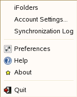
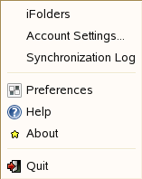

2.2 Stopping the iFolder Client
To stop the iFolder client:
-
Right-click the iFolder application icon
 in
the Notification area, then select .
in
the Notification area, then select .
Files are synchronized with your iFolder server account only when you are connected to the iFolder server. You can stop synchronization by logging out of an account. iFolder continues to run in the background. For information, see Section 2.5, Logging Out of an iFolder Account.